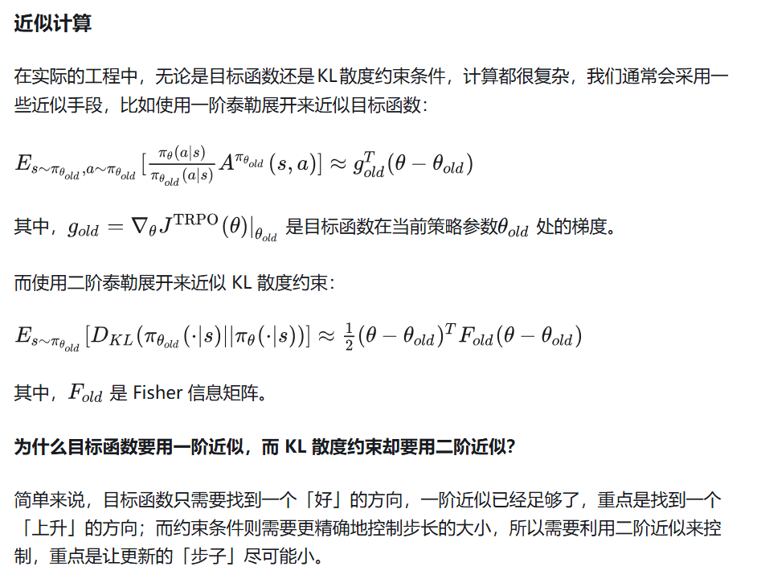
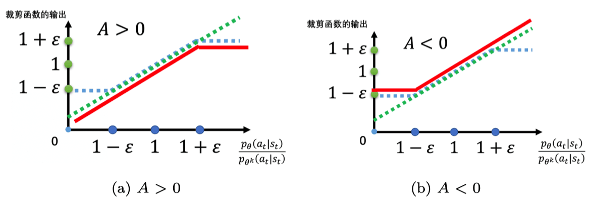

TRPO 和 PPO
重要性采样回顾和问题
经过重要性采样，我们可以用旧的数据 \(\pi_{\theta'}\) 来训练新策略 \(\pi_\theta\)，公式如下：
\[
J^{\theta^{\prime}}(\theta)=\mathbb{E}_{\left(s_{t}, a_{t}\right) \sim \pi_{\theta^{\prime}}}\left[\frac{p_{\theta}\left(a_{t} | s_{t}\right)}{p_{\theta^{\prime}}\left(a_{t} | s_{t}\right)} A^{\theta^{\prime}}\left(s_{t}, a_{t}\right)\right]
\]
\[
\nabla J = \mathbb{E}_{\left(s_{t}, a_{t}\right) \sim \pi_{\theta^{\prime}}}\left[\frac{p_{\theta}\left(a_{t} | s_{t}\right)}{p_{\theta^{\prime}}\left(a_{t} | s_{t}\right)} A^{\theta^{\prime}}\left(s_{t}, a_{t}\right) \nabla \log p_{\theta}\left(a_{t}^{n} | s_{t}^{n}\right)\right]
\]
但是有一个注意点和关键点：\(p_{\theta}\left(a_{t} | s_{t}\right)\) 不能与 \(p_{\theta'}\left(a_{t} | s_{t}\right)\) 相差太多。否则重要性采样的结果就会不好（在上一章节中的公式推导中，如果差距过大那么方差会过大）。所以在训练的时候，应多加一个约束（constrain）。
这就是这一章要做的内容。
TRPO
信任区域策略优化（TRPO）认为约束应该是 \(\theta\) 与 \(\theta'\) 输出的动作的 KL 散度（KL divergence），这一项用于衡量 \(\theta\) 与 \(\theta'\) 的相似程度。
\[
\begin{aligned}
J_{\mathrm{TRPO}}^{\theta^{\prime}}(\theta)=\mathbb{E}_{\left(s_{t}, a_{t}\right) \sim \pi_{\theta^{\prime}}}\left[\frac{p_{\theta}\left(a_{t} | s_{t}\right)}{p_{\theta^{\prime}}\left(a_{t} | s_{t}\right)} A^{\theta^{\prime}}\left(s_{t}, a_{t}\right)\right],\mathrm{KL}\left(\theta, \theta^{\prime}\right)<\delta
\end{aligned}
\]
其实就是加了一个 KL 散度限制，其中 \(\delta\) 是一个超参数，用于控制 \(\theta\) 与 \(\theta'\) 的相似程度。
在实际的工程中，无论是目标函数还是KL散度约束条件，计算都很复杂，我们通常会采用一些近似手段，以下内容直接来自，个人感觉没必要细看，太细节了：

PPO
从上面图片也能看出，即使有很多优化 TRPO 也确实不好算，所以有了 PPO 这个近端策略优化方法。PPO 直接把约束放到要优化的式子里面：
\[
\begin{aligned}
&J_{\mathrm{PPO}}^{\theta^{\prime}}(\theta)=J^{\theta^{\prime}}(\theta)-\beta \mathrm{KL}\left(\theta, \theta^{\prime}\right) \\
&J^{\theta^{\prime}}(\theta)=\mathbb{E}_{\left(s_{t}, a_{t}\right) \sim \pi_{\theta^{\prime}}}\left[\frac{p_{\theta}\left(a_{t} \mid s_{t}\right)}{p_{\theta^{\prime}}\left(a_{t} \mid s_{t}\right)} A^{\theta^{\prime}}\left(s_{t}, a_{t}\right)\right]
\end{aligned} \tag{5.6}
\]
当然，这样做是有代价的，PPO牺牲了TRPO「策略单调提升」的保证。但是实操上更简单，也容易获得更好的效果。机器学习是一门实践的艺术——效果好，才是真的好。就是这么一个简单的改变，PPO 却成了一个相当有名和重要的方法，它是现在 OpenAI 默认的强化学习算法（不知道现在是不是，三年前的参考文章这样写的）。
Q: 为什么不直接计算 \(\theta\) 和 \(\theta'\) 之间的距离？计算这个距离甚至不用计算 KL 散度，L1 与 L2 的范数（norm）也可以保证 \(\theta\) 与 \(\theta'\) 很相似。
A：在做强化学习的时候，之所以我们考虑的不是参数上的距离，而是动作上的距离，是因为很有可能对于演员，参数的变化与动作的变化不一定是完全一致的。有时候参数稍微变了，它可能输出动作的就差很多。或者是参数变很多，但输出的动作可能没有什么改变。所以我们真正在意的是演员的动作上的差距，而不是它们参数上的差距。因此在做 PPO 的时候，所谓的 KL 散度并不是参数的距离，而是动作的距离。
PPO-Clip
如果我们觉得计算 KL 散度很复杂，那么还有一个 PPO2算法，PPO2 即近端策略优化裁剪。近端策略优化裁剪的目标函数里面没有 KL 散度，其要最大化的目标函数为
\[
\begin{aligned}
J_{\mathrm{PPO2}}^{\theta^{k}}(\theta) \approx \sum_{\left(s_{t}, a_{t}\right)} \min &\left(\frac{p_{\theta}\left(a_{t} | s_{t}\right)}{p_{\theta^{k}}\left(a_{t} | s_{t}\right)} A^{\theta^{k}}\left(s_{t}, a_{t}\right),\right.\\
&\left.\operatorname{clip}\left(\frac{p_{\theta}\left(a_{t} | s_{t}\right)}{p_{\theta^{k}}\left(a_{t} | s_{t}\right)}, 1-\varepsilon, 1+\varepsilon\right) A^{\theta^{k}}\left(s_{t}, a_{t}\right)\right)
\end{aligned}
\]
看起来很复杂，其实拆解就好了：
min 这个不用多说，在第一项与第二项里面选择比较小的项。clip 也不用多说，就是小于 \(1-\varepsilon\) 就输出 \(1-\varepsilon\)，大于 \(1+\varepsilon\) 就输出 \(1+\varepsilon\)，否则输出原值。- \(\varepsilon\) 是一个超参数，是我们要调整的，可以设置成 0.1 或 0.2 。
通过裁剪函数，最后能让 \(p_{\theta}(a_{t} | s_{t})\) 与 \(p_{\theta^k}(a_{t} | s_{t})\) 更加比较接近：

PPO-Penalty
类似于上面的 Clip，但是不是暴力裁剪。这个就不纠结了，总之还是 PPO-Clip 是最广泛和标准的形式。